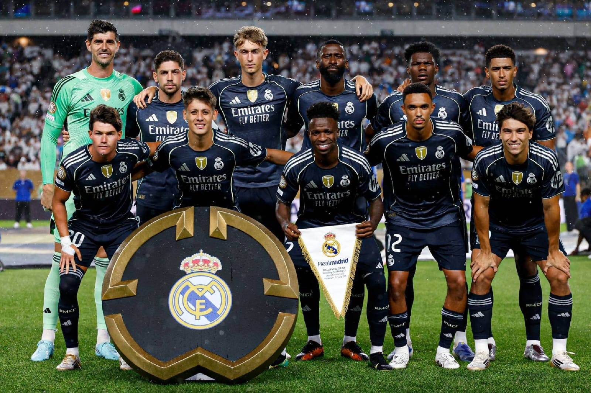
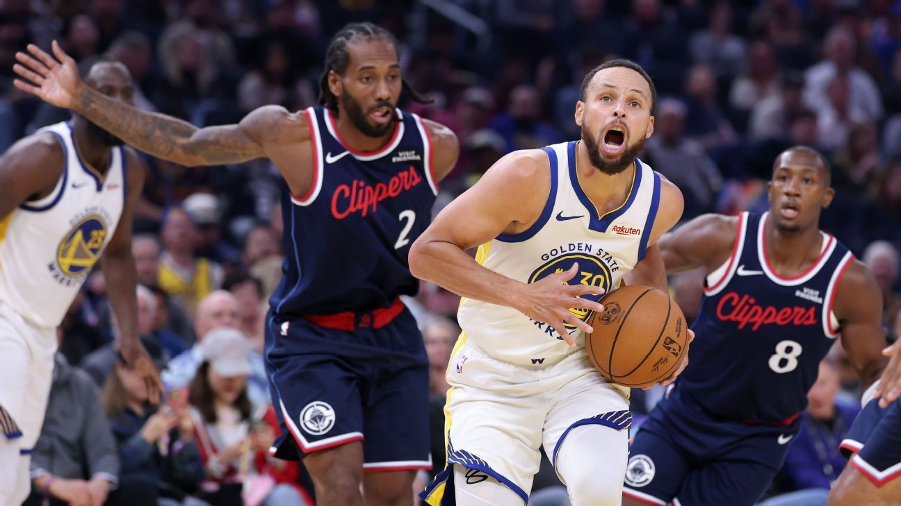
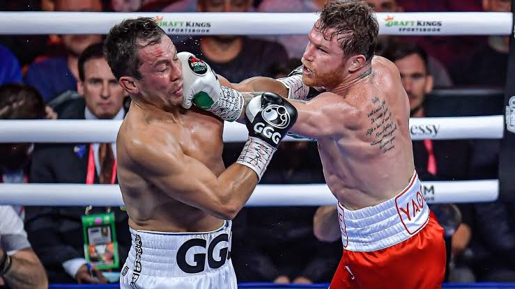
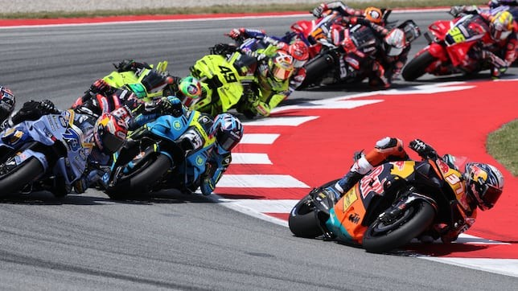

|
|
⚽ El deporte que mas me gusta practicar es el futbol, es un deporte que disfruto mucho con mis amigos y familiares. lo juego desde que era pequeño y tambien me gustaba
jugar en campeoneatos de mi colonia, gane 4 campeonatos con mis amigos. El fútbol también me ha ayudado a convivir con otras personas y a fortalecer amistades. Muchas veces jugamos partidos
amistosos o apostados, lo que hace que los juegos sean más emocionantes y competitivos. Gracias a este deporte he aprendido la importancia del trabajo en equipo, la disciplina y la constancia. Mi equipo favorito es el Real Madrid.
🏀 También me gusta mucho el baloncesto, aunque no lo practico con tanta frecuencia como el fútbol. Me parece un deporte muy entretenido y dinámico, ya que requiere velocidad, coordinación y trabajo en equipo.
En ocasiones juego con mis amigos cuando tenemos la oportunidad, y aunque no soy un experto, disfruto mucho cada partido.
Además, me gusta ver videos y partidos de baloncesto porque admiro la habilidad que tienen algunos jugadores para controlar el balón y hacer jugadas impresionantes. Considero que es un deporte muy interesante y
me gustaría practicarlo más seguido para mejorar mis habilidades y aprender nuevas técnicas.
🥊 Otro deporte que me gusta mucho es el boxeo, aunque nunca lo he practicado. Me gusta ver peleas y seguir algunos eventos porque considero que es un deporte que requiere mucha disciplina, resistencia y preparación física.
Admiro el esfuerzo y la dedicación que tienen los boxeadores para entrenar y mejorar cada día.
También me llama la atención la estrategia que utilizan durante las peleas, ya que no solo se trata de fuerza, sino también de inteligencia y rapidez mental. Aunque por el momento no practico este deporte, disfruto mucho
verlo y aprender más sobre él.
🏍️ También me gusta mucho ver carreras de motos y carros, especialmente competencias como la Formula One y MotoGP. Estos deportes me llaman mucho la atención por la velocidad, la emoción y la habilidad que tienen los pilotos para
competir al más alto nivel. Disfruto ver las carreras por que me gustaria practicar las carreras de motos, uno de mi sueños es correr en un autodromo reconocido.
Me impresiona la concentración y la preparación que necesitan
los corredores para manejar a grandes velocidades y tomar decisiones rápidas durante las competencias. Además, me gusta aprender sobre las motos y los carros que utilizan, ya que la tecnología y el rendimiento de los vehículos son muy avanzados.



